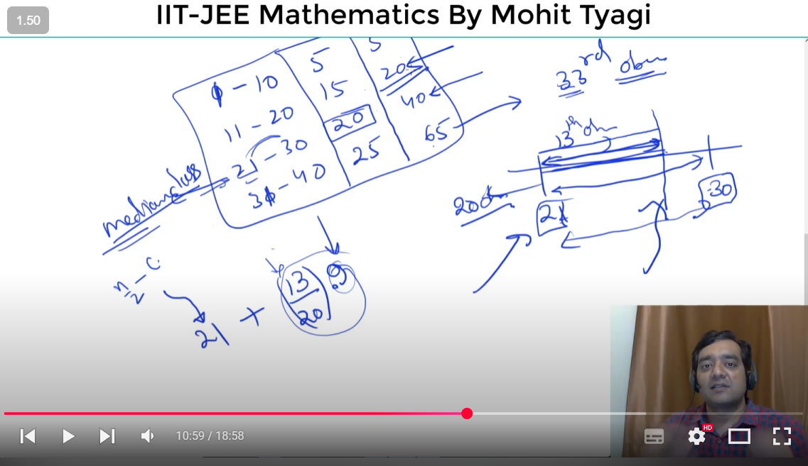
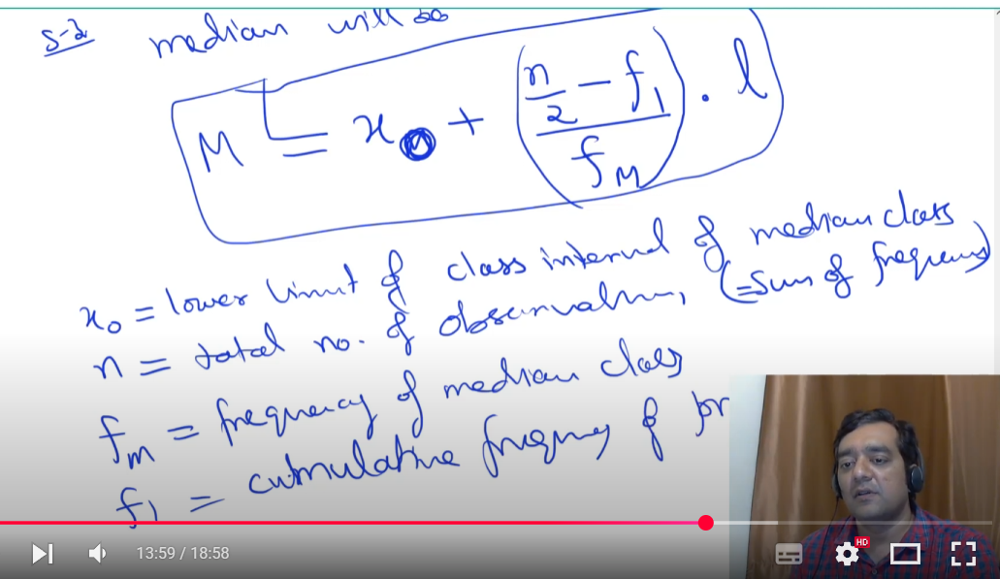
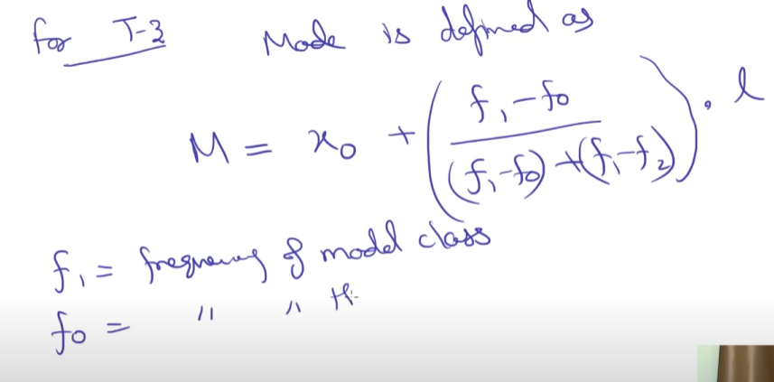

Three types of data representation:
1. Ungrouped T1 — 2, 14, 17
2. Grouped with single class value (T2) — 2*10, 5*15, 7*20
(This is element * frequency; like 2*10 means 2 appears 10 times)
3. Grouped with range class value (T3) — (11-20)*10, (21-30)*15, (31-40)*7
(This means values between 11-20 appear 10 times)
Key Concepts:
1. Average = (x1 + x2 + x3 + ... + xn) / n → central value
2. Mode = element that occurred the most
3. Median = can eliminate outlier
- If n is odd → (n+1)/2
- If n is even → (n/2 + n/2+1) / 2
Note: Data must be sorted before finding median
4. Dispersion or Scatterness
5. Finding average for T3:
Data: (0-9)*2, (10-19)*10, (20-29)*12, (30-39)*8
Step: Convert each range to mid value → (0+9)/2 = 4.5
So it becomes like T2 → 4.5*2, 14.5*10, etc.
Average = (x1*f1 + x2*f2 + ... + xn*fn) / (f1 + f2 + ... + fn)
6. What is cumulative frequency?
→ Just prefix sum of frequencies
7. Calculating median in T3:
- Find cumulative frequencies
- Find n/2 (if even) or (n+1)/2 (if odd)
- Identify the class interval where this lies
- Apply formula:
Median = L + [(n/2 - F) / f] * h
Where:
L = lower boundary of median class
F = cumulative freq before class
f = freq of median class
h = class width


8. Calculating mode for T3 class:
Mode = L + [(f1 - f0) / (2f1 - f0 - f2)] * h
Where:
L = lower limit of modal class
f1 = frequency of modal class
f0 = frequency before modal class
f2 = frequency after modal class
h = class width
